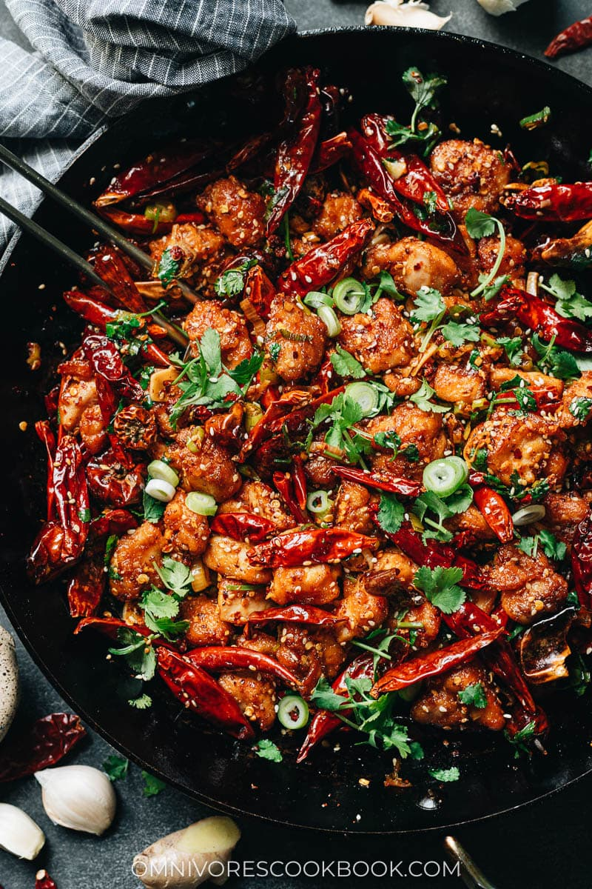
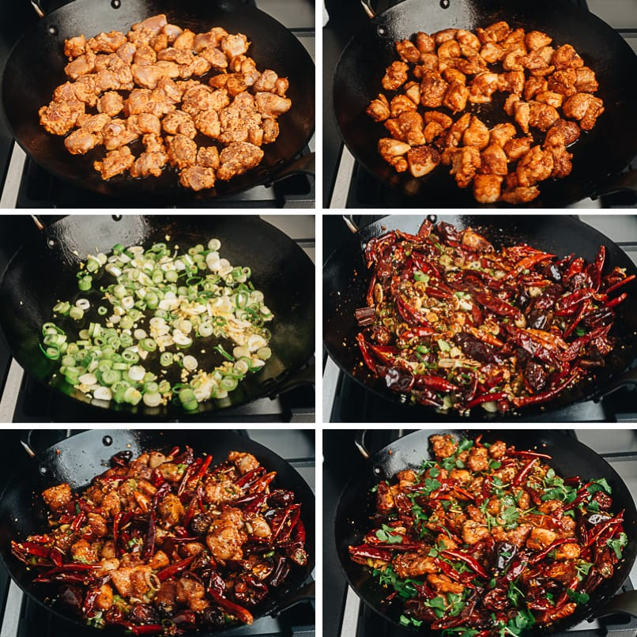

Sichuan Mala Chicken (辣子鸡)

Sichuan La Zi Ji features crispy chicken smothered in chili peppers, Sichuan
peppercorns, and tons of aromatics to create an electrifyingly hot numbing sensation
that's so addictive. This recipe was obtained from Omnivores Cookbook
by
Maggie Zhu.
Preparation
Marinade
Ingredients
- 1 lb (450 g) boneless skinless chicken thigh cut into 1" (2.5cm) cubes
- 1 tablespoon shaoxing wine
- 1 tablespoon light soy sauce
Prep
- Combine everything in a medium sized bowl.
- Mix well and marinate for 10-15 minutes.
Spice mix
Ingredients
- 1 tablespoon toasted sesame seeds (add more for garnish)
- 1 to 3 cups of whole dried red Sichuan chilies
- 2 tablespoons Sichuan chili flakes
- 1 teaspoon sugar
Prep
- Combine all the spices in a big bowl.
Chicken coating
Ingredients
- 1/4 cup cornstarch
- 1 teaspoon cayenne powder
- 1 teaspoon ground Sichuan peppercorns
- 3/4 teaspoon salt
Prep
- Mix everything in a large ziplock back and shake to mix.
Cooking
Ingredients
- 1/4 cup peanut oil (or vegetable oil)
- 2 teaspoons Sichuan peppercorns
- 5 garlic cloves, thinly sliced
- 1 thumb ginger, minced
- 4 green onions, sliced
- 1 cup chopped cilantro (add more for garnish)
How to cook
- Drain chicken and discard remaining marinating fluid then transfer the chicken
into the the cornstarch bag mixture.
- Shake and massage the bag to coat the chicken until no more dry ingredients left.
Add more cornstarch if chicken is still wet.
- Heat a large skillet until smoking then add oil. When oil is hot, add the chicken
- Make sure the chicken is separated, when the bottom turns golden brown, flip to
cook the other side. When fully cooked, transfer chicken to plate.
- Turn to medium-low heat, add oil if there is not enough left in the pot.
Fry the Sichuan peppercorns until dark brown.
- Remove the peppercorns then add the aromatics then stir to release fragrance.
- Add spice mix bowl with the peppers. Stir quickly until darker (not black)
- Return chicken to pan. Cook and stir well until mixed.
- Add cilantro then mix. Transfer to plate when cooked.

- Serve hot with steamed rice.